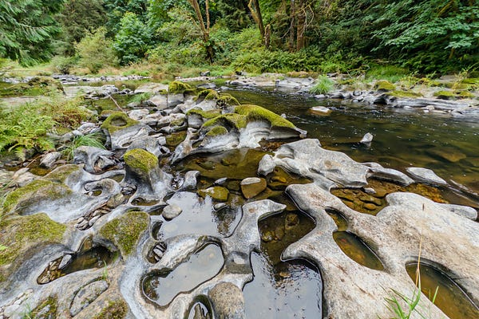

Somewhere in the Pacific Northwest, cold water moves over gravel in the dark. A salmon is returning to the creek where its body was made. Fertile Ground Conservancy exists to keep that possible — by protecting land, and by supporting the people who refuse to let it be destroyed.

Drift Creek, OR · Photo: Max WilbertLand Conservation
We're protecting 15 acres in the Elk Creek watershed of Del Norte County, California — habitat for endangered Coho salmon, Northern Spotted Owl, Port Orford cedar, Pacific Giant salamander, and Roosevelt elk.
 Elk Creek watershed · Photo: Justin Garwood
Elk Creek watershed · Photo: Justin Garwood
Fiscal Sponsorship
We provide nonprofit status, grant management, and organizational support to grassroots ecological and social justice initiatives aligned with biocentric, liberatory values.
Learn more →